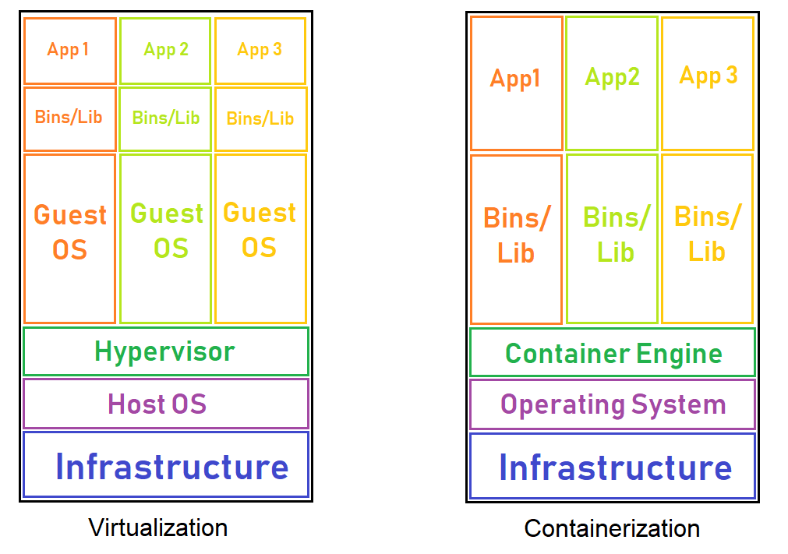

After taking a look at each of these technologies, the question is, which one should be used? The answer is that it depends on several different points. Essentially, each business and application will have different needs, requirements, and purpose. The choice of virtualization versus containerization depends on the business development and operational model, and the way applications are written and produced. Both are software technologies that create self-contained virtual packages, but to choose the one that will best suit the user’s needs, we will look at the following points.
When it comes to speed, containers were meant to significantly reduce the time needed to deploy and run an application. The container starts immediately, since the operating system is already up and running, so the application will start up without any noticeable delay. This is an excellent solution for a development environment, mainly, as it saves time in the application testing cycle. On the other hand, virtual machines need to start the entire operating system, which includes the full boot process. This will also include the startup of the services, and it will take much longer than it would for a container. Resources: Since virtual servers run separate operating systems, and every system call has to go through the virtualization layer, a certain amount of overhead is created, causing more resources to be used. This is particularly true for memory usage, as virtual machines consume memory even when they aren’t running any user processes. However, CPU virtualization is relatively cheap, so the CPU overhead of a virtual machine can be much smaller. When it comes to containers, they can start up pretty quickly, so their memory consumption doesn’t increase. There is also much less overhead as they are using the same operating system without a hypervisor to go through.
Security and isolation: In regard to security and isolation, virtualization wins, as it keeps virtual machines separate and isolated from each other. One infected virtual machine will not affect another one, and each virtual machine can incorporate its own security protocols since they are running in a fully isolated environment. However, since containers only isolate data and applications at the process level, they provide a less secure environment and depend on the security protocols of the host system. Portability and application sharing: Since container images are much smaller than virtual machines, they are easier to transfer and save space on the host’s filesystem. Virtual machines, on the other hand, need to have a copy of the whole operating system, including the kernel, system libraries, configuration files, all the directories required by the operating system and all the utilities. This dramatically increases the size of the image and is not that easy to share. Container images can be shared in any manner of ways, and there are a number of application sharing hubs on the internet. Virtual machine images do not have such centralized hubs and would usually need to be uploaded to another server instead. Operating system requirements: A virtual machine is best used in the case when a business needs to run multiple applications that require the full functionality of a dedicated operating system. However, if most of the applications have the same operating system requirements, the containers would be a much more practical solution.
Application lifecycle: Containers are highly suitable for short-term application needs, as they can be set up quickly, are portable, and can be started up much faster. They are, however, limited by the lack of a dedicated operating system, processing, and storage resources. Containers should be used when the biggest priority is maximizing the number of applications running on a minimal amount of servers. However, virtual machines are far better suited for applications that need to be used for an extended period of time, since they run in a virtualized environment that is more robust and versatile.